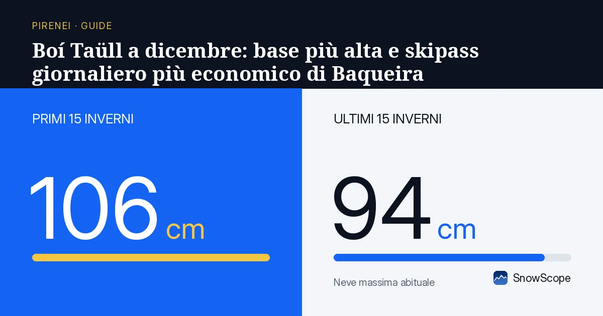

Boí Taüll a dicembre: base più alta e skipass giornaliero più economico di Baqueira
Per una vacanza a basso costo a dicembre in Spagna, Boí Taüll offre un punto di partenza più alto e un biglietto giornaliero più economico di Baqueira Beret. Gli impianti partono da 2039 m con uno skipass giornaliero per adulti a 49,00 EUR, contro la base di 1.504 m e il biglietto da 74,00 € di Baqueira Beret. Anche così, la neve di inizio dicembre è una scommessa, quindi il tempismo è importante.
Le previsioni neve in tempo reale per Boí Taüll nell'app SnowScopeAltezza neve, allerte powder e mappa 3D, gratis.
Partenza in quota a 2039 m
Una base alta significa meno rischio di camminare sull'erba fino al primo impianto, e nessuna località della nostra lista dei Pirenei parte più in alto. L'area mappata di Boí Taüll va da 2.039 m a 2.747 m, con 708 m di dislivello, 35 km di piste e 9 impianti. La prima neve duratura arriva di solito il 9 novembre alla base, il 4 novembre a metà montagna (2.393 m) e il 3 novembre in vetta.
La stima della neve di oggi, 13 novembre, mostra un inizio tranquillo: 0 cm alla base e 5 cm a metà montagna e in cima, con 0 cm, 4 cm e 6 cm di neve fresca nei prossimi 7 giorni. Dal 13 al 26 novembre, la previsione per le due settimane varia da 13 a 36 cm a metà montagna e oltre, mai una promessa.

Probabilità di neve settimana per settimana a dicembre
Secondo la nostra storia della neve di 46 inverni passati (1980-81 al 2025-26), dicembre inizia magro. Alla base di 2039 m, un dicembre abituale ha una media di 16 cm (17 cm il 15 dicembre), sotto 1 cm in un inverno scarso (1 su 10) e sopra 52 cm in uno abbondante. A metà montagna (2.393 m) la media è di 25 cm (24 cm il 15 dicembre; scarso sotto 3 cm, abbondante sopra 71 cm), mentre la cima a 2.747 m ha una media di 34 cm (32 cm il 15 dicembre; scarso sotto 4 cm, abbondante sopra 90 cm).
Settimana dopo settimana, le date successive pagano. Dall'1 al 7 dicembre, 30 cm o più si verificano nel 15 % degli inverni passati alla base, 35 % a metà montagna e 41 % in cima (50 cm o più: 2 %, 11 %, 20 %). Dall'8 al 14 dicembre, 30 cm o più colpiscono il 24 %, 41 % e 43 % (50 cm o più: 9 %, 17 %, 30 %). Dal 15 al 21 dicembre, quelle probabilità di 30 cm o più salgono al 30 %, 48 % e 57 % (50 cm o più: 9 %, 22 %, 37 %). Dal 22 al 28 dicembre, 30 cm o più raggiungono il 39 %, 54 % e 63 %, con 50 cm o più nel 15 %, 33 % e 46 %.
Quanto costa il pass
Sul sito ufficiale di Boí Taüll, un pass giornaliero per adulti (25-64 anni) costa 49,00 EUR. I pass plurigiornalieri e l'alloggio non sono stati controllati, quindi usa quella tariffa giornaliera per pianificare e controlla il sito ufficiale prima di prenotare. Per 35 km di piste mappate, mantiene i costi degli impianti modesti.
Contro Baqueira Beret
Baqueira Beret è più grande, con 154 km di piste mappate, 36 impianti e 1.096 m di dislivello tra 1.504 m e 2.600 m. Sul suo sito ufficiale per il 2026-27, un 'Baqueira Ticket' giornaliero per adulti è 74,00 € (70,00 € con la carta ricaricabile 'Baqueira Pass'), e un 'Baqueira Ticket' da 6 giorni è 359,00 €. Il pass da 49,00 EUR di Boí Taüll mantiene i costi giornalieri più bassi.
Sulla neve di dicembre, l'altezza di Boí Taüll batte Baqueira Beret a ogni livello. La base di 1.504 m di Baqueira Beret ha una media di 8 cm (9 cm il 15 dicembre; 0 cm in un inverno scarso, sopra 37 cm in uno abbondante), con 30 cm o più nel 4 %, 11 %, 15 % e 20 % nelle quattro settimane di dicembre. La sua metà montagna a 2.052 m ha una media di 20 cm (19 cm il 15 dicembre; scarso sotto 2 cm, abbondante sopra 56 cm), con 30 cm o più nel 22 %, 30 %, 35 % e 41 %. A 2.600 m, ha una media di 30 cm (30 cm il 15 dicembre; scarso sotto 3 cm, abbondante sopra 77 cm), raggiungendo 30 cm o più nel 39 %, 46 %, 52 % e 59 %, e 50 cm o più nel 13 %, 22 %, 30 % e 37 %.
L'inverno scorso e la visione a lungo termine
Il dicembre dell'inverno scorso (2025-26) è stato scarso a Boí Taüll, con una media di 9 cm alla base, 14 cm a metà montagna e 19 cm in cima. Nella nostra storia della neve, dicembre è variato dal 2016-17 (1 cm alla base, 2 cm a metà montagna e in cima) al 2021-22 (67 cm, 94 cm e 121 cm). Gli inverni abituali raggiungono picchi di 77 cm, 109 cm e 154 cm su 142, 162 e 167 giorni di neve.
Confrontare i primi 15 inverni (1980-81 al 1994-95) con gli ultimi 15 (2011-12 al 2025-26) mostra un piccolo calo nei valori medi di dicembre: da 15 cm a 12 cm alla base, da 22 cm a 20 cm a metà montagna e da 30 cm a 28 cm in cima. L'inizio di dicembre rimane incerto, quindi scia in alto e scegli settimane successive.
Consigli per sciatori
- Punta al 15-21 dicembre o 22-28 dicembre, quando la cima a 2.747 m raggiunge 30 cm o più nel 57 % e 63 % degli inverni passati invece del 41 % dell'1-7 dicembre.
- Scia tra metà montagna (2.393 m) e la cima (2.747 m), dove le profondità abituali di dicembre sono 25 cm e 34 cm invece di 16 cm alla base.
- Prenota il tuo pass giornaliero per adulti (25-64 anni) a 49,00 EUR sul sito ufficiale di Boí Taüll e controlla lì le tariffe plurigiornaliere.
- Leggi il bollettino valanghe ogni mattina prima di andare fuori pista, specialmente dopo le tempeste sopra i 2.393 m.
Altre mappe (siti esterni)
Riferimenti e crediti
- Boí Taüll, official lift pass prices (tarifes) pirineu365.cat/boitaull/estacio/tarifes/
- Baqueira Beret, official prices (tarifas), season 26-27 www.baqueira.es/es/tarifas
- SnowScope, December snow at three heights and today's snow map snowscope.app/
Su questi numeri
Numeri della neve: storico neve SnowScope, 46 inverni passati (1980-81 - 2025-26) a tre quote di ogni località (un modello del passato corretto per la quota: una stima per un'area, non misure della località); dati di dicembre calcolati dalle altezze giornaliere di quegli inverni. Neve attuale e tendenza a due settimane: previsioni SnowScope (tendenza da ECMWF e GFS, un intervallo, non una promessa). Impianti e piste: mappatura OpenSkiMap. Prezzi: le pagine ufficiali qui sotto, lette il 2026-11-13; i prezzi possono cambiare, verificare prima di prenotare.
Bollettini valanghe ufficiali: ICGC – Butlletí de perill d'allaus (Catalunya)
Cita questo articolo
Per ricerca, didattica o stampa: numeri e grafici sono liberamente riutilizzabili con licenza CC BY 4.0 citando così.
SnowScope (2026), Boí Taüll a dicembre: base più alta e skipass giornaliero più economico di Baqueira, https://snowscope.app/blog/it/2026/11/boi-taull-december-ski-highest-pyrenees-base-2026.html, consultato il 2026-11-14
SnowScope (Atlas Labs). (2026, November 14). Boí Taüll a dicembre: base più alta e skipass giornaliero più economico di Baqueira. SnowScope snow reports. https://snowscope.app/blog/it/2026/11/boi-taull-december-ski-highest-pyrenees-base-2026.html
BibTeX
@misc{snowscope2026boitaulldecemberskihighe,
author = {{SnowScope (Atlas Labs)}},
title = {Boí Taüll a dicembre: base più alta e skipass giornaliero più economico di Baqueira},
year = {2026},
month = nov,
howpublished = {\url{https://snowscope.app/blog/it/2026/11/boi-taull-december-ski-highest-pyrenees-base-2026.html}},
note = {Published 2026-11-14 20:01 UTC; accessed 2026-11-14}
}· CC BY 4.0 · Metodi, dati e strumenti →
Boí Taüll: neve e temperatura per quota, quest'inverno vs lo scorso (strumenti) →
Segui Boí Taüll
Gratis: un messaggio quando arriva la neve e il meteo ogni mattina.